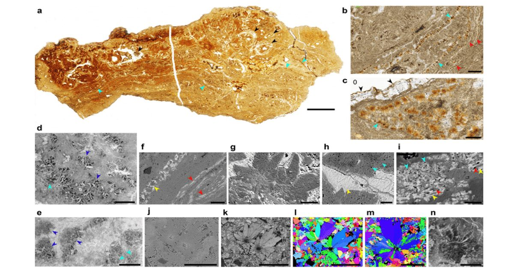

В Китае обнаружили одну из древнейших мягких скорлуп динозавров рядом с эмбрионами
Мягкая скорлупа могла быть важным этапом в эволюции яиц динозавров, однако окаменелости редко сохраняют ее первоначальную структуру.
Новая находка из Китая, датированная ранним юрским периодом, позволила рассмотреть не только оболочку, но и органическую основу.